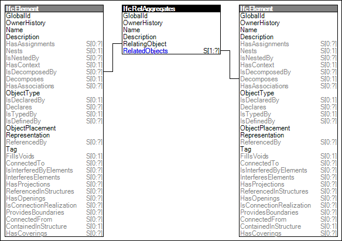

Link to this page
Link to this pageProvision of an aggregation structure where the element, representing the composite, is decomposed into parts represented by other elements.
The composite then provides, if such concepts are in scope of the Model View Definition, exclusively the following:
By default the following constraints apply to an element being decomposed by Element Decomposition:
NOTE Use the sub template Element Decomposition Required if any instance of the element is required to represent a composite with declared parts.
Figure 31 illustrates an instance diagram.
 |
Figure 31 — Element Decomposition |